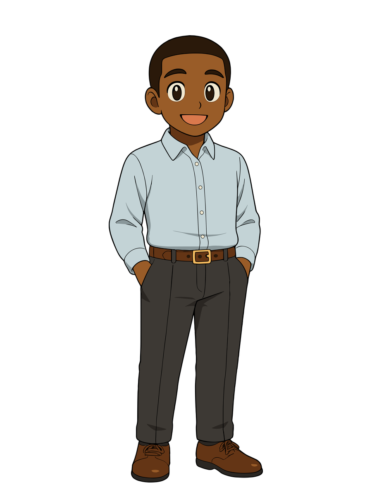
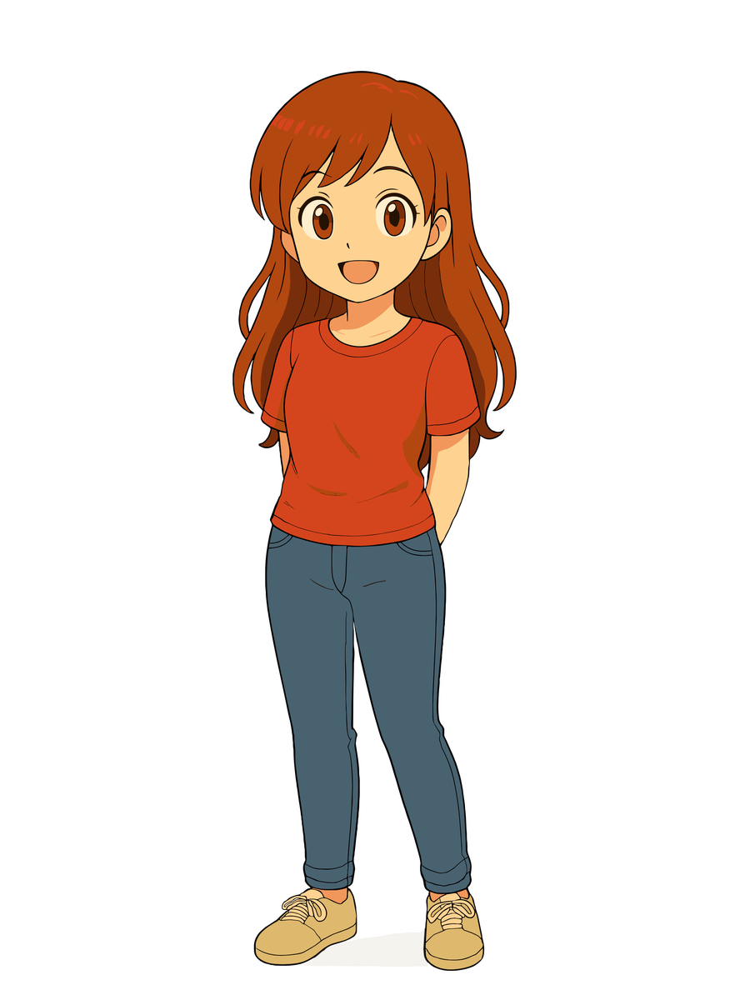

Good News Towing
Frequently Asked Questions
Quick answers to some of the questions we hear most often from drivers and families we help.

Questions We Hear Often
Open any question below for the full answer.
Where is your tow lot?
We use a few vehicle-storage locations, all in Olathe. Because the location can depend on the tow, the easiest next step is to call us at 913-214-1924. We can confirm where your vehicle is and explain what you need to do to retrieve it or otherwise move forward.
Do you repossess vehicles?
No. Good News Towing does not repossess vehicles for banks, lenders, repossession companies, or other third parties. We are a towing and roadside-assistance company, not a repossession company.
Do you patrol apartment complexes looking for vehicles to tow?
No. We do not patrol apartment complexes or private parking lots looking for vehicles to tow, and we do not operate as a private-property impound company.
Are you insured?
Yes. Good News Towing operates under a USDOT number and carries $1 million in insurance coverage. We maintain active operating credentials and insurance for the towing work we perform.
Is every Good News Towing character based on a real person?
Yes. Every character is based on someone real: Blake, Maricela, Jojo, and Anastasia. The cartoon versions may never have a bad hair day, but the people behind them are very real.
Are you open 24/7?
Not quite. We are closed on Sunday mornings so everyone on our team has the opportunity to attend their preferred place of worship, and we usually begin taking calls again around 1 p.m. Outside of that window, we are available nearly around the clock. During especially high call volume, we may need to begin scheduling some calls for the following day.
Still have a question?
Give us a call. We can answer your question and help you figure out the next step.